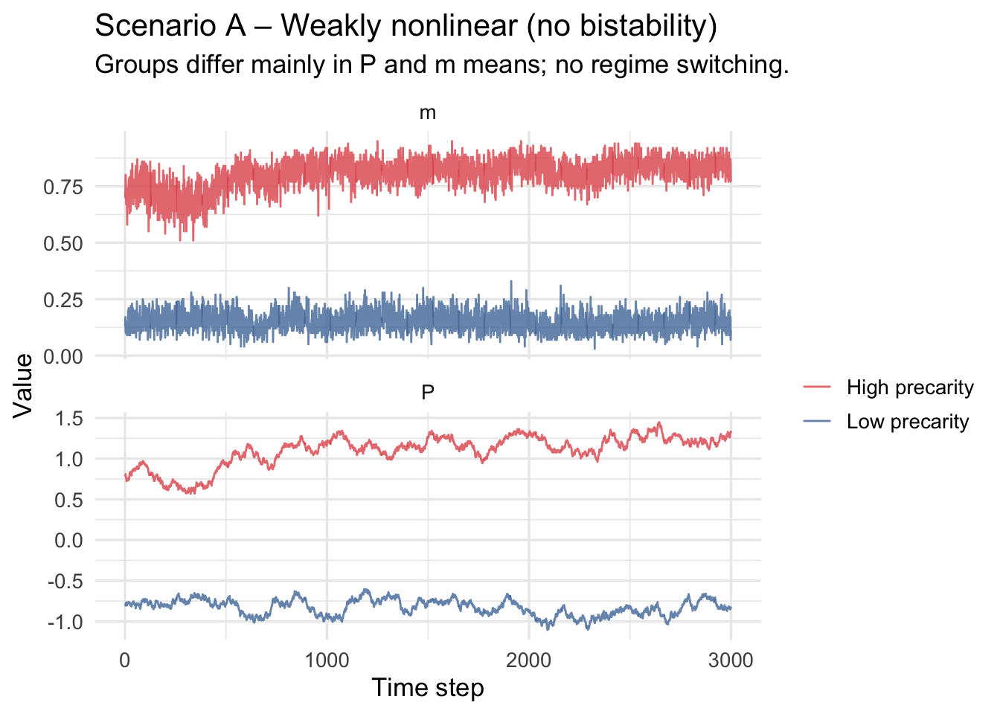
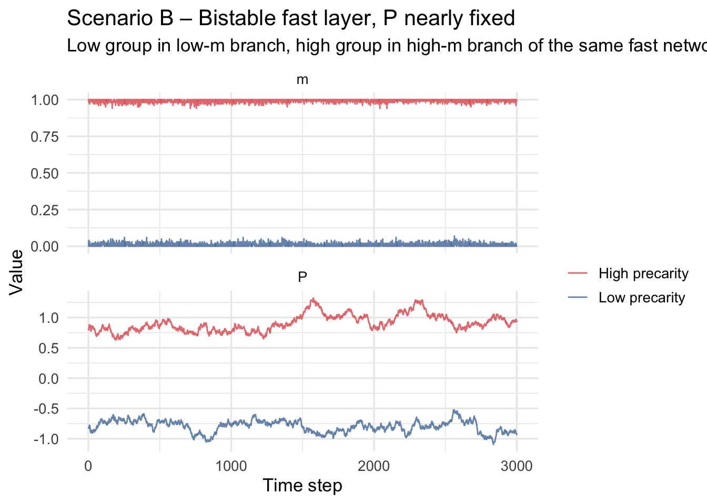
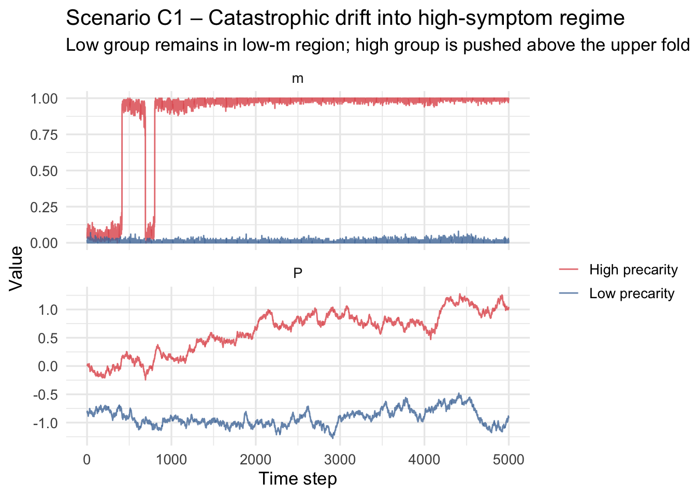

Mental health symptoms fluctuate on fast time scales (hours–days), while socio-economic pressures such as financial precarity, discrimination, or workload change more slowly (months–years). Standard symptom-network models:
treat symptoms as a closed system,
interpret group differences in network structure as internal differences.
Here we explicitly couple:
a fast 0/1 Curie–Weiss symptom layer (binary symptoms with mean-field interaction),
a slow precarity variable (P_t) that drifts gradually,
feedback from symptoms back into precarity.
We show how group differences in symptom trajectories can arise purely from:
different precarity baselines and
different feedback strengths,
with identical fast-layer parameters.
We examine:
Scenario A: Weakly nonlinear fast layer (no bistability).
Scenario B: Strongly nonlinear fast layer with bistability; precarity almost fixed around different baselines.
Scenario C1: Same bistable fast layer + strong two-way feedback → catastrophic drift into high-symptom regime.
Scenario C2: Same bistable fast layer + moderate feedback + noise → episodic flipping in and out of high-symptom regime.
2. Fast layer: 0/1 Curie–Weiss symptoms
We use a Curie–Weiss-type model with spins
[ s_i .]
The mean symptom activation is
[ m = _i s_i .]
The local “field” for a node is
[ H = J(m - ) + h_0 + _P P.]
We then update spins with a logistic rule:
[ (s_i = 1 m, P) = (H) = .]
For large enough (J) (specifically (J > 4)) this mean-field system is bistable for an intermediate range of (P).
Code
# One fast update block for 0/1 Curie–Weiss Ising layer# s in {0,1}; P is current precarityising_fast_step01 <-function( P, s,beta =1.0,J =1.0,h0 =0.0,gammaP =0.5,sweeps =30){ n <-length(s) # spins in {0,1}for (sw inseq_len(sweeps)) { m <-mean(s) # mean activation in [0,1]# field for this mean-field model H <- J * (m -0.5) + h0 + gammaP * P p <-inv_logit(beta * H)# update spinsfor (u inseq_len(n)) { i <-sample.int(n, 1) s[i] <-rbinom(1, 1, p) } } s}
3. Slow layer: precarity dynamics
The slow variable (P_t) evolves with:
mean reversion to group-specific baseline (P_{}),
feedback from symptoms through a slowly evolving average (m_{}),
Here the fast layer has weak coupling ((J < 4)), so there is a single attractor for all (P). Groups differ in baseline precarity.
Code
par_fast_A <-list(n_nodes =100,sweeps =20,beta =1.0,J =2.5, # beta*J = 2.5 < 4 ⇒ no bistabilityh0 =-0.2,gammaP =0.8)par_slow_A <-list(dt =0.02,kappa =0.30,b =0.20,m_star =0.10,sigmaP =0.10,lambda_m =0.001)sim_A <-run_scenario_parallel(par_fast = par_fast_A,par_slow = par_slow_A,P_bases =c(-0.8, 0.8),labels =c("Low precarity", "High precarity"),T_steps =3000,seeds =c(1, 2)) %>%mutate(scenario ="A")sim_A_long <- sim_A %>%select(t, P, m, group) %>%pivot_longer(c(P, m),names_to ="variable",values_to ="value")ggplot(sim_A_long, aes(t, value, colour = group)) +geom_line(alpha =0.8, linewidth =0.5) +facet_wrap(~ variable, scales ="free_y", ncol =1) +scale_color_manual(values =c("Low precarity"="#4E79A7","High precarity"="#E15759")) +labs(title ="Scenario A – Weakly nonlinear (no bistability)",subtitle ="Groups differ mainly in P and m means; no regime switching.",x ="Time step", y ="Value", colour ="" )

7. Scenario B – Bistable fast layer, P almost fixed
Now use the bistable fast-layer parameters from Section 4. Precarity is tightly mean-reverting, so each group stays near its baseline (P_{}).
Low group baseline below bistable window → low-symptom branch.
High group baseline above bistable window → high-symptom branch.
Code
par_fast_B <-list(n_nodes =100,sweeps =40,beta = beta_BC,J = J_BC,h0 = h0_BC,gammaP = gammaP_BC)par_slow_B <-list(dt =0.02,kappa =0.50, # strong mean reversionb =0.08, # weak symptom → P feedbackm_star =0.10,sigmaP =0.10,lambda_m =0.001)sim_B <-run_scenario_parallel(par_fast = par_fast_B,par_slow = par_slow_B,P_bases =c(P_low_fold -0.6, P_high_fold +0.6),labels =c("Low precarity", "High precarity"),T_steps =3000,seeds =c(3, 4)) %>%mutate(scenario ="B")sim_B_long <- sim_B %>%select(t, P, m, group) %>%pivot_longer(c(P, m),names_to ="variable",values_to ="value")ggplot(sim_B_long, aes(t, value, colour = group)) +geom_line(alpha =0.8, linewidth =0.5) +facet_wrap(~ variable, scales ="free_y", ncol =1) +scale_color_manual(values =c("Low precarity"="#4E79A7","High precarity"="#E15759")) +labs(title ="Scenario B – Bistable fast layer, P nearly fixed",subtitle ="Low group in low-m branch, high group in high-m branch of the same fast network.",x ="Time step", y ="Value", colour ="" )

8. Scenario C – Bistability + strong two-way feedback
We keep the same bistable fast layer (par_fast_B) but weaken mean reversion and/or increase feedback and noise so that (P_t) can wander through the bistable region.
We consider:
C1: Catastrophic drift into high-symptom regime.
C2: Episodic flipping in and out of the high-symptom basin.
8.1 Scenario C1 – Catastrophic flip
Code
# --- replace your current par_slow_C1 + sim_C1 block with this ---par_fast_C <- par_fast_B # same bistable fast layer as Scenario B# C1: weak pullback, strong positive feedback, low noisepar_slow_C1 <-list(dt =0.02,kappa =0.20,b =0.25,m_star =0.15,sigmaP =0.10,lambda_m =0.001)sim_C1 <-run_scenario_parallel(par_fast = par_fast_C,par_slow = par_slow_C1,P_bases =c(P_low_fold -0.6, (P_low_fold + P_high_fold)/2),labels =c("Low precarity", "High precarity"),T_steps =5000,seeds =c(21, 22)) %>%mutate(scenario ="C1")sim_C1_long <- sim_C1 %>%select(t, P, m, group) %>%pivot_longer(c(P, m),names_to ="variable",values_to ="value")ggplot(sim_C1_long, aes(t, value, colour = group)) +geom_line(alpha =0.8, linewidth =0.5) +facet_wrap(~ variable, scales ="free_y", ncol =1) +scale_color_manual(values =c("Low precarity"="#4E79A7","High precarity"="#E15759")) +labs(title ="Scenario C1 – Catastrophic drift into high-symptom regime",subtitle ="Low group remains in low-m region; high group is pushed above the upper fold and stays high-m.",x ="Time step", y ="Value", colour ="" )

8.2 Scenario C2 – Episodic flips up and down
Code
# --- REPLACE your current Scenario C2 block with this ---# C2: episodic flipping – equilibria for low/high m sit inside the bistable windowpar_slow_C2 <-list(dt =0.02,kappa =0.30, # stronger pullback than beforeb =0.15, # weaker symptom -> P feedbackm_star =0.30, # symptoms have to be quite high to push P up a lotsigmaP =0.15, # fairly big noise so P can cross foldslambda_m =0.001)# For the low group: baseline safely below the window# For the high group: baseline near the middle of the windowsim_C2 <-run_scenario_parallel(par_fast = par_fast_C, # same bistable fast layer as B/C1par_slow = par_slow_C2,P_bases =c(P_low_fold -0.8, # low precarity group (P_low_fold + P_high_fold)/2), # high precarity grouplabels =c("Low precarity", "High precarity"),T_steps =6000,seeds =c(31, 32)) %>%mutate(scenario ="C2")sim_C2_long <- sim_C2 %>%select(t, P, m, group) %>%pivot_longer(c(P, m),names_to ="variable",values_to ="value")ggplot(sim_C2_long, aes(t, value, colour = group)) +geom_line(alpha =0.8, linewidth =0.5) +facet_wrap(~ variable, scales ="free_y", ncol =1) +scale_color_manual(values =c("Low precarity"="#4E79A7","High precarity"="#E15759")) +labs(title ="Scenario C2 – Episodic flipping in and out of high-symptom regime",subtitle ="High group hovers in the bistable window and occasionally flips up to high m and back down.",x ="Time step", y ="Value", colour ="" )
9. Interpretation & next steps
Scenario A: Fast layer is unimodal; groups differ mainly in mean levels of precarity and symptoms, not in qualitative dynamics.
Scenario B: Fast layer is bistable; with nearly fixed P, groups occupy different basins of the same Curie–Weiss network.
Scenario C1: Strong two-way coupling can create one-way catastrophic transitions into a high-symptom regime.
Scenario C2: With stronger mean reversion and more noise, we get episodes: the high-precarity group flips between low- and high-symptom regimes as P drifts through the bistable window.
Crucially, in B/C:
The internal 0/1 Curie–Weiss parameters (β, J) are identical across groups. Differences arise from slow external conditions (baseline P and feedback), not from different symptom couplings.
Once you’re happy with these dynamics, we can:
build a graphical abstract (conceptual diagram + bifurcation + scenario summary), and
add a HELlUS section that maps real group differences in precarity onto different (P_{}), (b), and () and shows how this framework explains observed symptom-network differences.